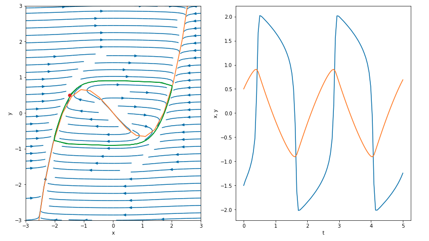
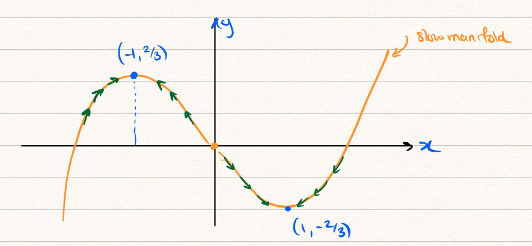
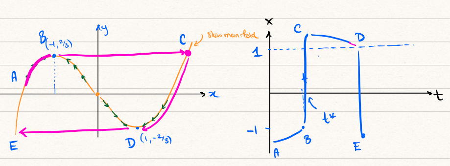
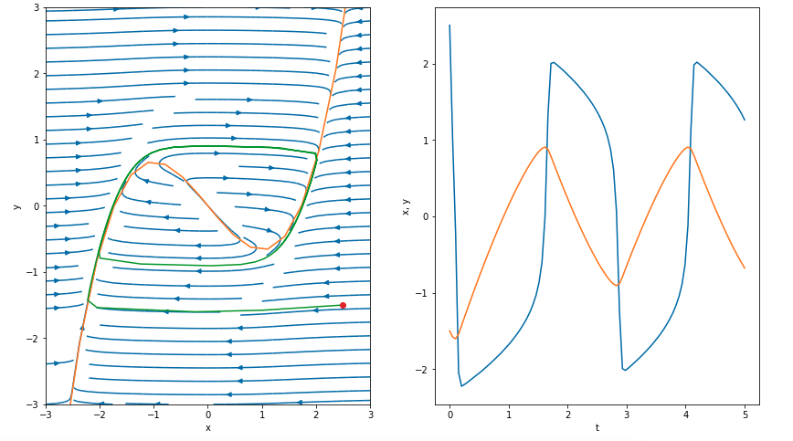

23 Ice ages III: analysis of the van der Pol equation
In the previous chapter we introduced a canonical model for fast-slow dynamics given by the following system for \(x(t)\) and \(y(t)\): \[ \begin{align} \epsilon \dot{x} &= y - S(x), \\ \dot{y} &= -x. \end{align} \] where \(\epsilon > 0\) and \(\epsilon \to 0\). This led to our study of then numerical computation of solutions and example graphics like this:

We now show how to perform the asymptotic analysis of the above system. The techniques used relate to the analysis of boundary layers studied in sec-asymptotics03.
23.1 Analysis of the slow manifold
Let \[ x(t) = x_0(t) + \epsilon x_1(t) + \epsilon^2 x_2(t) + \ldots, \qquad y(t) = y_0(t) + \epsilon y_1(t) + \epsilon^2 y_2(t) + \ldots \] At leading order, we get the following system of equations: \[ \begin{align} 0 &= y_0 - S(x), \\ \dot{y_0} &= -x_0. \end{align} \tag{23.1}\] First, examine the differential equation on the second line. Since the rate-of-change of \(y\) is equal to \(-x\), we can analyse the motion in the phase plane by the following cases: \[ y_0 \text{ is } \begin{cases} \text{decreasing} & \text{for $x_0 > 0$} \\ \text{increasing} & \text{for $x_0 < 0$} \end{cases}. \] Therefore, we conclude that the \(y\) axis is nullcline in this leading-order approximation. The remaining equation restricts the solution to lie along the slow manifold, \[ y_0 = S(x) = \frac{1}{3}x_0^3 - x_0. \]

According to our analysis, we should have both \(y \sim S(x)\) as \(\epsilon \to 0\) and also \(y\) increasing on \(x < 0\) while decreasing on \(x > 0\). But this yields an apparent contradiction as \(x\to \pm 1\) and \(y \to \mp 2/3\).
The issue is that, at the critical point(s) where \(x \to \pm 1\), say \(t = t^*\), the solution encounters a shock or boundary layer where the gradient \(\dot{x}\) is no longer small. Thus our prior assumption where we neglected \(\epsilon \dot{x}\) is invalid.
23.2 Fast analysis
Near a shock, we re-scale \[ T = \frac{t - t^*}{\epsilon^\alpha} \Longrightarrow t = t^* + \epsilon^\alpha T, \] and set \(x(t) = X(T)\) and \(y(t) = Y(T)\) under this new coordinate change. Essentially, this re-scales the coordinate axes, originally in \(t\), near the unknown location of the shock, \(t = t^*\). We can verify that the correct balance for re-scaling is chosen with \(\alpha = 1\). From the chain rule, we convert derivatives as follows: \[ \frac{\mathrm{d}}{\mathrm{d}t} = \frac{\mathrm{d}T}{\mathrm{d}t} \frac{\mathrm{d}}{\mathrm{d}T} = \frac{1}{\epsilon} \frac{\mathrm{d}}{\mathrm{d}T}. \] Then the system becomes \[ \begin{align} \frac{\mathrm{d}X}{\mathrm{d}T} &= Y - S(X) \\ \frac{\mathrm{d}Y}{\mathrm{d}T} &= -\epsilon X. \end{align} \] We expand now in the typical fashion, setting \[ \begin{align} X &= X_0(T) + \epsilon X_1(T) + \ldots \\ Y &= Y_0(T) + \epsilon Y_1(T) + \ldots \end{align} \] At leading order, this now yields \[ \begin{align} \frac{\mathrm{d}X_0}{\mathrm{d}T} &= Y_0 - S(X_0) \\ \frac{\mathrm{d}Y_0}{\mathrm{d}T} &= 0. \end{align} \]
Therefore, from the second equation, we obtain \[ Y_0 = \text{constant} \] which is to be expected from the phase-plane diagrams we have shown. Since we have established that the max/min of the slow manifold, \(S(X)\), is given by \(\pm 2/3\), then we know that the above constant is this value if the solution had begun from the slow manifold (see comment later about the initial condition).
Next, the equation for \(X_0\) has the form of a first-order nonlinear differential equation that can be studied by phase-line analysis. If the constant \(Y_0\) is indeed \(\pm 2/3\), then the differential equation for the other component takes the form \[ \frac{\mathrm{d}X_0}{\mathrm{d}T} = Y_0 - S(X_0) = \pm \frac{2}{3} - S(X_0). \]
This leads to the following picture.

To begin, we consider the evolution from the points marked ‘A’ and ‘B’. This occurs along the slow manifold. At the point ‘B’, time reaches the critical point, \(t \to t^*\), and the solutions enter the fast dynamics, following along points ‘B’ to ‘C’. Notice that along this segment in the phase plane, \[ \frac{2}{3} - S(X_0) > 0, \] therefore \(X_0\) must increase during this time. However, upon approaching the point ‘C’, the above LHS tends to zero, and hence \(X_0\) slows its increase. This exists the fast dynamics layer and again the solution continues along the slow manifold from ‘C’ to ‘D’. Upon reaching ‘D’, it again enters a stage of fast dynamics (the \(t^*\) point here is a new one).
23.3 Initial conditions
You will notice that above, we have not really discussed the effect of the initial conditions, say, \[ \begin{align} x(0) &= A, \\ y(0) &= B. \end{align} \] Perhaps more specifically, we have performed our asymptotic analysis with the assumption that the solution starts directly on the slow manifold, i.e. \(y \sim S(x)\). Returning to the slow analysis leading to Equation eq-sloweqns notice that the above conditions will not in general be compatible with the equations (since ‘A’ and ‘B’ might be chosen completely different from those values where \(y = S(x)\)). The conclusion is then that the slow analysis applied cannot be valid near the initial condition.
This turns out to be very similar to the example studied in sec-asymptotics03, which also had a time-dependent problem where the initial condition was incompatible.
Therefore near \(t = 0\), we must introduce an analogous boundary layer. This analysis will be identical to the above fast-scale dynamics except that \(t^* = 0\). The conclusion is that if we begin off the manifold \(y = S(x)\), the solution will rapidly tend left or right in the phase plane (at near-constant values of \(y\)). Once it intersects with the manifold, the trajectories then resume the slow and fast dynamics observed above.
This is now shown below for the initial condition of \(x(0) = 2.5\), \(y(0) = -1.5\) and \(\epsilon = 0.05\).

Notice the red circle in the left phase plot showing the initial condition. We see that the solutions then exhibit the fast dynamics, with \(x\) decreasing, until encountering the slow manifold. Thereafter it follows the standard slow-fast dynamics.
On the right image, notice the significant shock or boundary layer near \(t = 0\). If desired, we could confirm the size of this boundary-layer regions scales with \(\epsilon\).